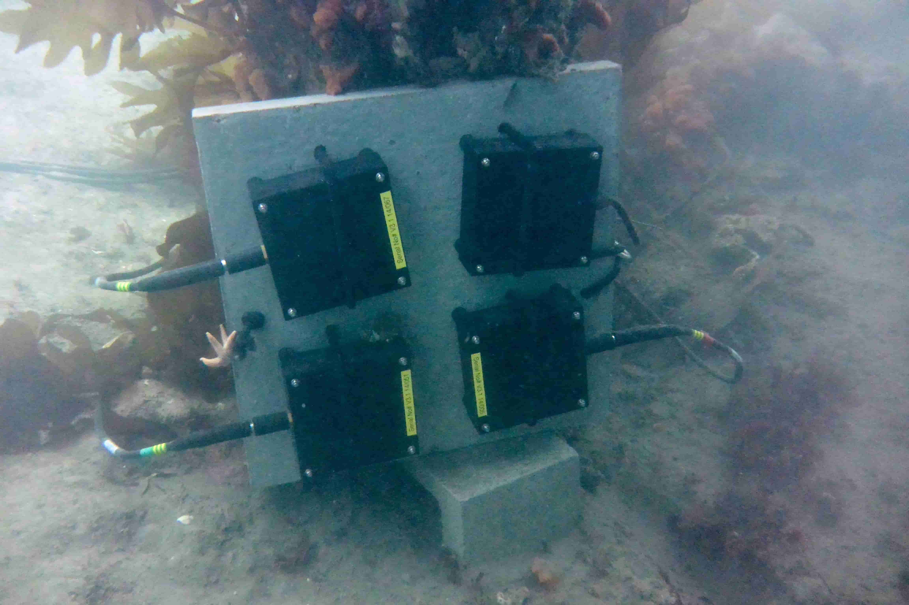
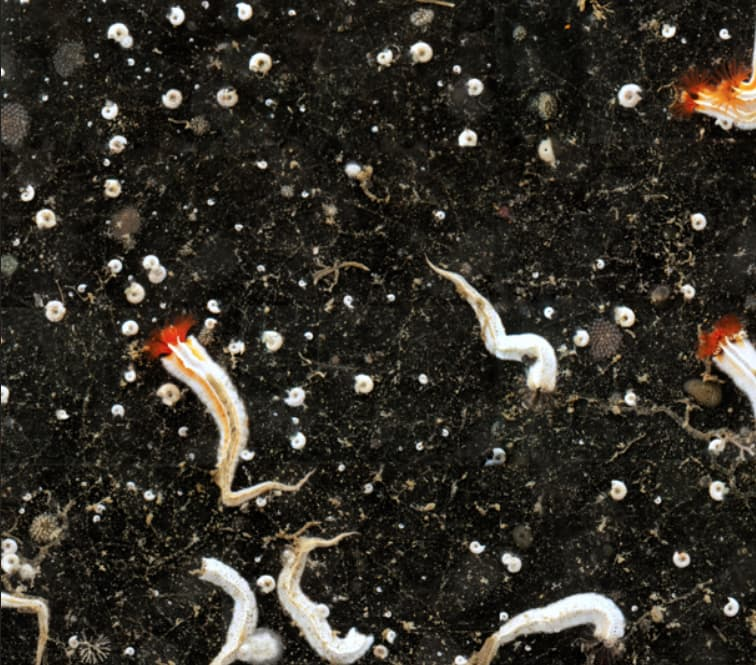
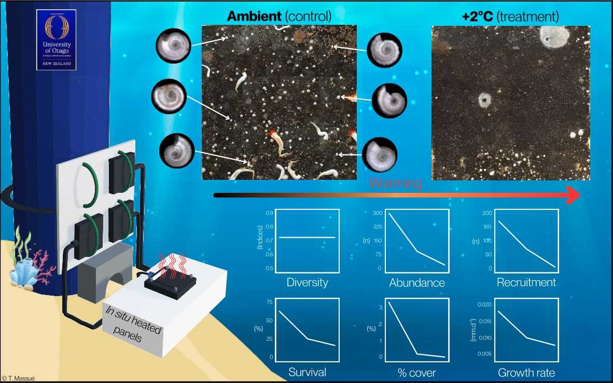

Environmental DNA & Molecular Ecology
PhD Candidate · University of Toulouse · CRBE laboratory
Contact MeAbout me
I investigate the use of environmental DNA (eDNA) to study aquatic insect communities in French Guiana. My research lies at the interface of community ecology, molecular ecology and bioinformatics, and I am also interested in macroecological questions across a broader range of taxa, including vertebrates.
My work is driven by two main motivations. The first is methodological: improving eDNA and metabarcoding based approaches and reducing their technical biases, to make them as robust and rigorous as possible. The second is more applied: using eDNA to monitor communities for conservation purposes, with a particular interest in assessing the impact of human activities and climate change on biodiversity.
More broadly, I value reproducible, rigorous, open and collaborative science.
In the past, I have also held various positions as a research assistant, data analyst, project manager, and fisheries observer →
Research Projects
This project aims at assessing water quality in French Guiana by studying aquatic insect communities using environmental DNA. Aquatic insects, and in particular Ephemeroptera, Plecoptera and Trichoptera, are widely used to evaluate the health of freshwater ecosystems, but identifying them through traditional taxonomic methods is time consuming and requires expertise that remains incomplete for many tropical taxa. Environmental DNA metabarcoding offers a scalable alternative, but it requires a reliable reference database and a validated bioinformatic pipeline to produce accurate community data.
My work consists in building and curating a reference database for aquatic insects species in French Guiana, including species delimitation, developing and comparing bioinformatic pipelines for sequence clustering and taxonomic assignment, and conducting statistical analyses to describe aquatic insect communities. The resulting data are being used to study differences in community composition between sites and habitats, and to assess the impact of anthropogenic disturbance on water quality.
The Heated Panels project aimed at better understanding how rising ocean temperatures affect benthic marine communities, in particular serpulid tubeworms, ascidians, bryozoans, and biofilms, which act as ecosystem engineers for many other species. Warming experiments are often conducted in tank conditions, which removes natural variation in light, food availability and temperature and limits how realistic the resulting ecological responses can be. To address this, the project used heated settlement panels deployed in situ, warming a thin layer of seawater directly above the panel surface by a controlled amount (+1°C or +2°C, corresponding to mid and end of century warming projections) while leaving the surrounding environment unmodified.
I conducted this research during my Master's degree at the University of Otago, New Zealand, in collaboration with Jessica Moffitt (PhD candidate) and the British Antarctic Survey.



Publications
Communications
Awards
CV
Undergraduate in Biology of Organisms and Ecosystems
Research Assistant in Behavioural Ecology
Behavioural ecology and genetics of the Mastrus ridens parasitoid; phenotypic capacity of diploid males to survive. Supervised by Xavier Fauvergue and Alexandra Auguste.
Fieldwork Assistant in a National Park
Field surveying and data management, identification of endemic species, and logistics for field missions. Supervised by Raphaëlle Rinaldo and Sébastien Sant.
Research Assistant in Marine Ecology
Creation of a second prototype to quantify Ostreopsis ovata, a benthic micro-alga, and to measure its concentration. Supervised by Luisa Mangialajo and Jean-Michel Grisoni.
Fieldwork Assistant in a Wildlife Park
Supported a wildlife park management; ethology studies on dolphins, lemurs and squirrel monkeys. Supervised by Alexandre Petry.
Postgraduate Diploma of Science
MSc, Marine Science
I studied the impact of rising temperatures on a benthic tube worms community using in situ heated panels, in collaboration with the British Antarctic Survey. Supervised by Prof. Miles Lamare.
Project Manager
Managed art events for a worldwide organisation (Sofar Sounds) and a national one (Hala); external engagement with partners; reporting, budgeting and volunteer management.
Data Analyst
Statistical analysis and data manipulation; maintained R-based code and GitHub repositories for analysis and reporting; supported client research projects.
Fisheries Observer
Collected samples and biological data for national scientific institutions; species identification; monitored operational compliance; reporting and analysis.
PhD Candidate in Ecology
The topic of my PhD is: Evaluation of water quality using environmental DNA: towards a monitoring of amphibians and aquatic insects in French Guiana.